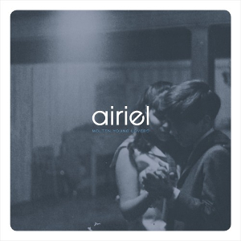
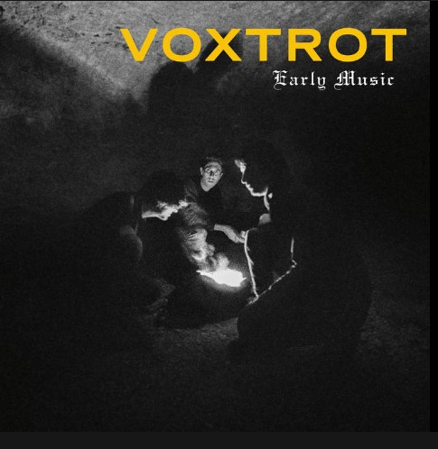
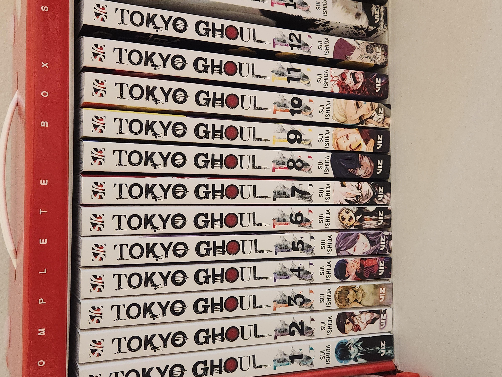

My main hobby is journaling. Everyday, I enjoy writing down my thoughts and experiences. I find it to be ag reat way to
help me think and process my emotions. Furthermore, I also like the experience of using nice, ergonomic mechanical pencils.
Journaling has given me a way to use such pencils more frequently in a world that's becoming more electronic. Overall, I'm
really excited to write my daily journal so that when I grow old, I have something to look back on.
In the video below, you see that in my current journal, I still have a lot to write. I always try to condense my thoughts into one
page. I do this for space and money purposes, as if I were to go over one page, I would go through journals pretty frequently. As moleskine
journals can go for $40 in Barnes & Nobles, I don't want to spend a lot of of money too quickly.
Other interests
My favorite bands are Airiel and Voxtrot


Current Favorte Song is "Molten Young Lovers" by Airiel
The Tokyo Ghoul Manga (I'm up to Volume 13)

The Percy Jackson Series. I've read all books from the series and will read the new one the just came out.